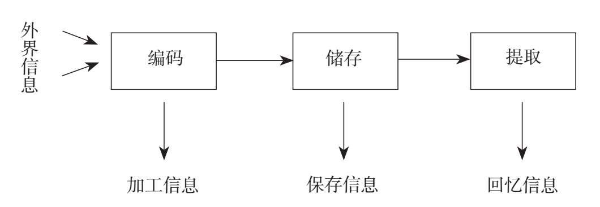
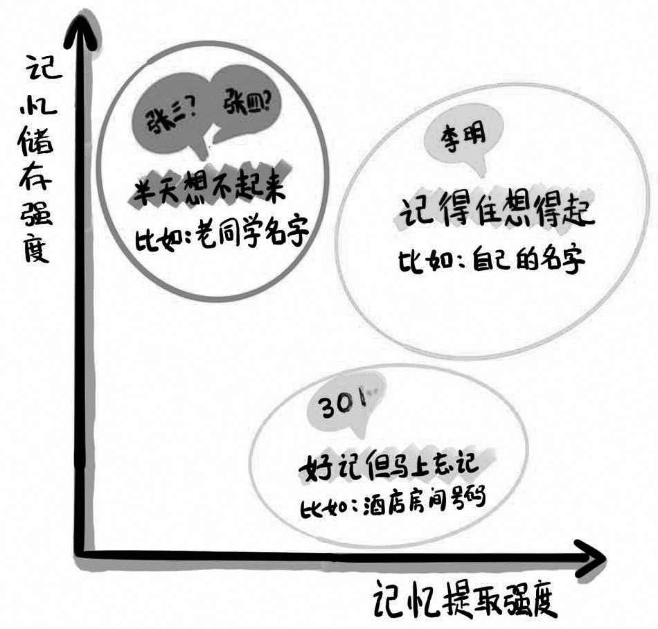

很多成年人经常会有类似的感慨：年纪渐长之后，记忆力越来越差，好不容易静下心来看书学习，但学过的东西马上就忘，久而久之自己也丧失了学习的积极性。
那么，年纪渐长真的会导致记忆力衰退吗？事实并非如此。很多科学研究都向我们证明了这一点：记忆力衰退并不是伴随年龄增长而必然出现的现象。只要排除一些影响记忆力的疾病，比如阿尔茨海默病（俗称老年痴呆），一个人的语言和工作记忆不会随着年龄增长而下降，这些功能在人的一生中基本是保持稳定的。实践证明，85岁的人仍能拥有清晰的思维和良好的记忆力。
如果不是年龄增长导致记忆力出现了问题，那么是什么原因导致我们总是学完就忘呢？
要找到善忘的原因，我们需要先明白什么是“记忆”。认知心理学认为，记忆是一个信息加工过程，这个过程实际上分为三个阶段：编码（信息存入记忆），储存（在头脑中保存信息）和提取（准确回忆信息）。
如果把大脑比作一个图书馆，记忆的过程类似图书管理员按照编码将图书上架到相应位置，有人来借书时，他能根据编码找到书的位置，将其从相应位置取出来。先对信息进行加工分类，再储存信息，最后提取信息，这就是记忆的完整过程。

编码是记忆的关键。信息被加工的水平越深，它存入记忆的可能性就越大。我们在学习中对信息进行加工的常见方式有两种：第一种是机械复述，比如在学生时代，我们总是依靠一遍又一遍的背诵去记住一个知识点。第二种是深度思考，并将其与已知知识融会贯通。与越多的知识联结，就会有越多的线索帮助我们记忆和理解新的知识。
在认知心理学看来，如果一段信息对我们有意义（经过深度加工），那么这段有意义的信息被我们记住的概率将会是无意义信息（简单复述）的10倍。显然，从这个角度看，导致学完就忘的一个很重要的原因便是我们花费了太多时间去学习或背诵，却很少花费时间去加工。
除此之外，我们对信息的储存和提取强度同样会对记忆产生影响。怎样理解储存强度和提取强度呢？最简单的解释是：一个信息在你的大脑里储存的时间越长，那么它的储存强度就越大。一个信息在当下越容易被你想起来，那么它的提取强度就越大。
举个例子，我们去外地出差，每次办完事情回到酒店，很容易想起自己的房间号。“很容易”想起一个信息，就说明这个信息的提取强度很高，我们很容易从大脑中提取到它。
但是，当我们离开这个城市之后，酒店房间号不再有被记住的必要，过不了多久，这个房间号码便会被我们遗忘。在我们用得上它的时候，酒店房间号这个信息很容易被记住，它的提取强度很高，但是因为它很难长时间被储存在我们的大脑里，因此它的储存强度很低。
再比如，我们经常会在谈到一个久未联系的小学同学时，一下子想不起来他的名字，此时，这个信息的提取强度很低。但如果有人能稍作提醒，那么我们不仅能立刻想起这位小学同学的名字，还能想起他的长相、性格，甚至是这个人身上曾经发生过的事情。小学同学的信息能够在我们的大脑里储存很久时间，它的储存强度很高。

认知科学研究发现，提取强度和储存强度之间经常会呈现出一种负相关的状态。换句话说，如果我们总是要求自己在当下必须记住一个信息（提取强度高），它反而会很快被大脑释放出来（储存强度低），因为我们的大脑总是需要留出空间去记住更多新的信息。反之，如果我们在存入信息时能够制造一些必要难度（提取强度低），则会帮助我们更长时间记住这个信息（储存强度高）。这个超出多数人常识的结论，被认知科学称为“必要难度原理”。
很多人的学习习惯是一边读书一边记笔记，但是必要难度原理建议我们不要这么做。因为一边阅读一边记笔记，会让我们记得太容易，但是大脑那块硬盘未来则不易提取信息，过些日子，这些内容反而会很容易被遗忘。
反之，如果我们能够略微增加一下做笔记的难度，比如等到第二天再依靠回忆将昨天阅读的内容写下来，遇到想不起来的内容，重新对照书本查漏补缺，那么，这部分内容的储存强度会更高，未来反而会更容易被提取。
现在，我们再回头思考“学完就忘”的原因，应该很容易找到答案。除了对信息加工不够之外，如果我们过于依赖一次性记住某些信息，而不是对信息进行及时的复习巩固，那么这些被记住过的信息仍然会被遗忘。因此，成年人大可不必担心“学完就忘”的问题，“学完就忘”其实是一个正常的记忆过程，遗忘反而是学习开始的契机，这是大脑在提醒我们：我们忽视了信息编码（深度加工）和信息储存（间隔复习）。
那么，我们应该怎么做呢？我个人曾尝试以下两种方法，来练习信息编码和储存。
第一，运用50/50原则，进行高效编码。即一半时间用来学习，一半时间用来分享我学到了什么。组织心理学家、沃顿商学院教授亚当·格兰特曾说：“学习某样东西最好的方法就是教它——不仅仅是因为解释它能帮助你理解，还因为这种检索可以帮助你记住它。”
在学生时代的学习过程中，我们往往更强调输入，但是从长期来看，学习最终应该归结到一件事：将新获得的信息与已有的知识进行联系，并且在重要的时刻能够应用到我们学到的东西。用50%的时间精力进行输入，同时用50%的时间精力复习和对别人进行解释，其实就是在学习的过程中增加输出，将新获得的信息与原有的知识做一个合并链接，增加信息在我们记忆中编码的背景线索（联系），从而使其在以后需要的时候更容易被提取。
我个人在阅读中经常践行“50/50规则”。每当阅读一本书的时候，我通常很少一次性看完，而是习惯先阅读这本书50%的内容，并试着回忆、写下我在继续阅读之前学到的关键内容，或者与我的家人朋友分享这些新的思想，这种习惯让我受益很大。
虽然被动地阅读一本书是个相对轻松的过程，但是让文字像洗热水澡一样冲刷在身上，并不会让我们处于最佳状态，因为对知识输出不深入一定会导致理解不充分。而合上书之后，写一个摘要，能迫使我们找出所学内容与原有知识的接触点，组织这些内容并将其分享给别人，获得新的反馈，也能让所学内容产生与原有知识更多的接触点，这个过程会使我们所学的东西更加牢固地储存在头脑中。
第二，制造测试效应，长期储存信息，即学习前后对自己进行多次主动测试。关于测试对记忆效果的影响，认知心理学教授鲁迪格和卡尔皮克曾经做过两个实验。
第一个实验是“学前测试实验”。参加实验的人被分成两组，共同学习一些组合在一起的词语，比如“鲸鱼和哺乳动物”。第一组的人直接学；第二组的人先看到组合中的一个词，然后猜另一个词是什么，最后才看到整个词语组合。研究表明，边猜边学的人的记忆效果普遍比直接学的人更好，因为人类大脑记忆的效果与记忆时付出的努力成正比，记忆时越费力，越困难，形成的记忆就越牢固。
第二个实验是“学后测试实验”。测试将学生分成两组，第一组反复阅读，一共学习20分钟；第二组先学习5分钟，然后拿走文章，每人拿一张纸写下所记住的内容，反复进行三次，并且没有人对他们所写内容进行反馈。同样的20分钟，第一组学生从头到尾都在学习，第二组学生只有1/4的时间在学习，其他时间都在重复测试前5分钟所学内容。20分钟学习之后，又过了5分钟，研究人员测试了所有学生对文章内容的记忆力。一个星期后，他们又重新测试了这批学生对文章的记忆力。结果发现，当测试在5分钟后进行的时候，重复学习的学生表现更好。但一个星期后的测试，结果却反转了：单纯重复的学生忘了一半以上的内容，但那些重复测试自己的学生，不仅记住的内容更多，遗忘的速度也变慢了。这个实验再次证明：记忆时越费力、越困难，形成的记忆就越长久。
我个人在职场中也常遇到一个记忆难题——记名字。因为工作需要，我经常会参加各种会议，但是参会人员大多只是一面之缘，彼此见过就忘。如何才能更好地记住一些高层和关键人物的名字呢？我曾尝试通过多做几次测试的方法帮助自己记忆。
参加会议之前，我通常能够在网络上公布的参会嘉宾的名单中看到一些高层或者主要人物的名字，一旦遇到不认识的人，我便会对着名字发挥想象。比如，看到“郭丽萍”这个名字，我会想象她是一位中年女士，有一头干练的短发。到了会议现场，见到郭丽萍女士之后，我便马上修正自己之前的想象，比如她的确是位中年女士，但有着一头棕色的卷发……就这样，我会将现场的人物和名单中的名字一一对应。会议结束后，每过一段时间，我还会拿出名单定期进行自我测试，逐个从名字出发给他们进行第二次画像，测试自己是不是还记得这些人的名字，他们分别是什么职位、长什么样子、有什么样的特点？通过这种方式，下一次在活动中与他们再见面的时候，我基本都能够非常准确地称呼他们。
这种自我测试的学习方法，本质上是对记忆间隔性地进行提取练习，大脑要从记忆中提取已经见过的人、特点、名字、职位等任何东西，所要付出的努力远比直接背诵或者重读一遍要多得多，而这份额外的努力则加强了这些记忆的储存能力。
所以，记忆不等于将知识强行灌入脑中，而是要让当事人亲自参与学习过程。要想真正记住某个知识，仅仅是被动接受远远不够，必须要通过主动吸收和推理，赋予知识以结构和意义，反复练习和使用，才能实现知识的真正“私有化”，也就是所谓的“记得住”，这也是学习记忆的总原则。在我看来，除此之外，任何追求记忆捷径的方法都是“镜花水月”。